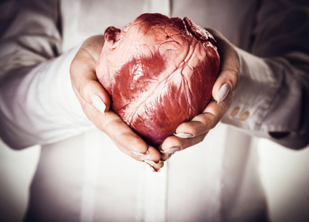

| Opinión | • El corazón es el órgano principal para vivir y existen muchos riesgos y enfermedades que lo atacan. Para no tener que padecer de algúna complicación es importante cuidar nuestra salud. La fabricación del órgano del corazón aún es dificil de conseguir. Es por esto mismo que debemos de colaborar en mantenernos bien para no sufrir. Gracias a la tecnología actual se ha facilitado salvar vidas con la fabricación de un corazón. |
 |